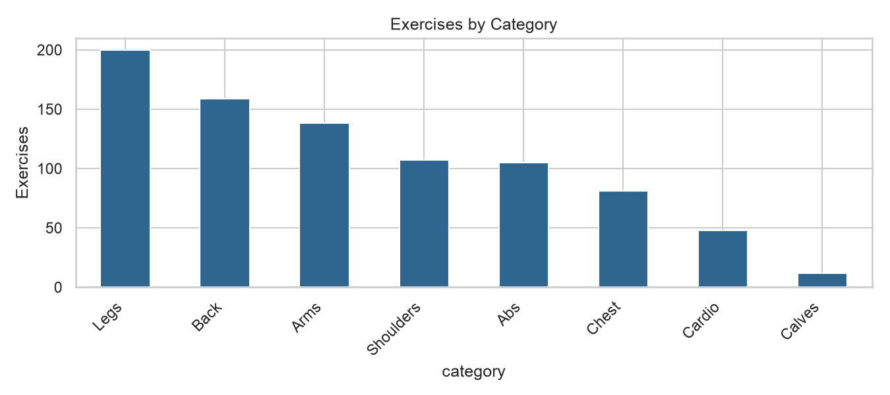
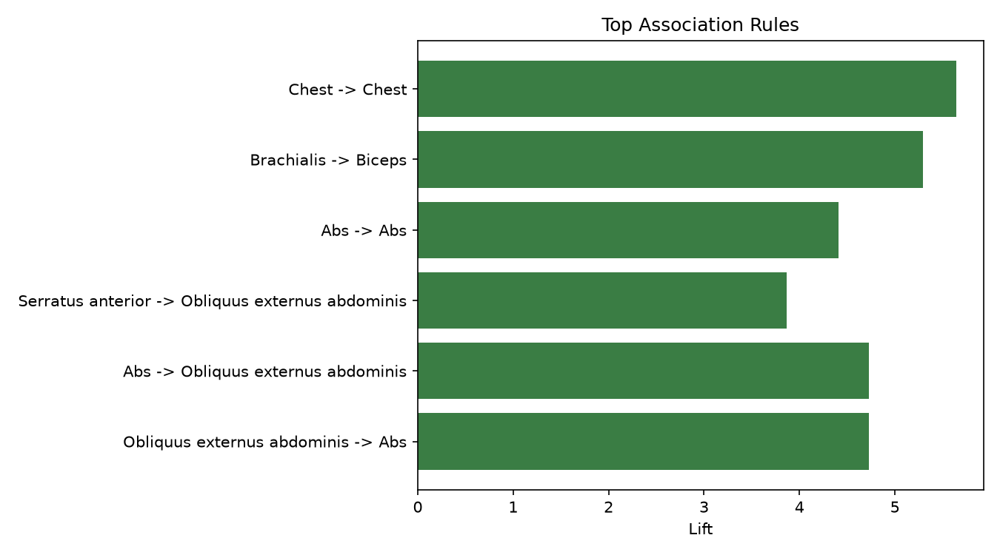
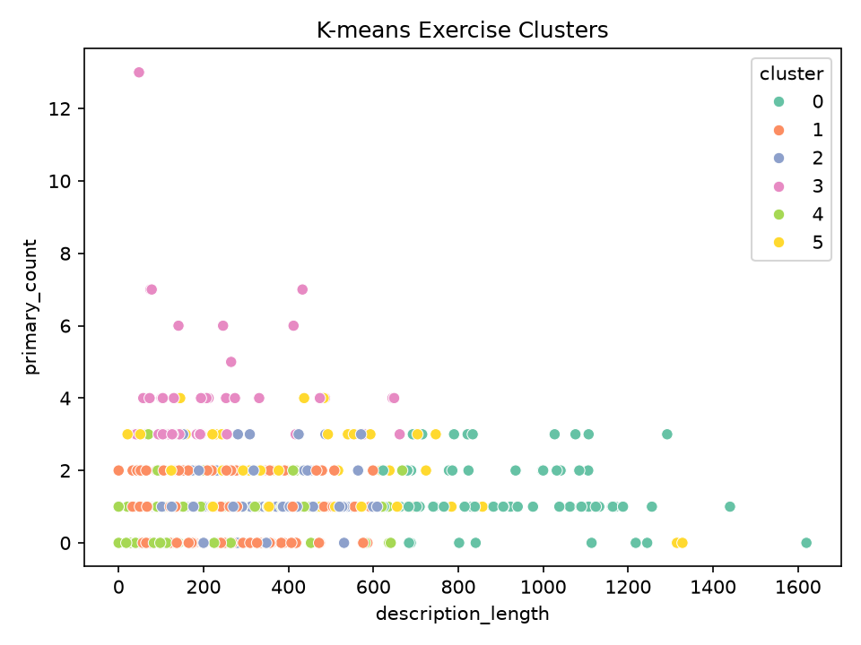

Prepare
Audit, clean and transform
Finding exercise patterns, groups and categories from a public exercise catalogue.
[Student Name]
[Roll Number]
The project uses 850 exercises and follows the Knowledge Discovery in Databases workflow.
exercise records
original attributes
executed notebooks
850 English exercise records collected from the public wger exercise catalogue.
workflows/fetch_exercises.pyCitation: wger Workout Manager. Exercise catalogue and public Exercise Info API. https://wger.de/
Audit, clean and transform
Support, confidence and lift
Find similar profiles
Classify, compare and recommend

clean = df.drop_duplicates().copy()
text_cols = clean.select_dtypes("object").columns
clean[text_cols] = clean[text_cols].apply(
lambda column: column.str.strip()
)
clean["description_length"] = (
clean["description"].str.len()
)
No complete duplicate rows were removed.
5Derived numeric features created for mining.
Why: preserve valid exercises, remove only proven duplication, and convert useful text properties into measurable model inputs.

Example: Chest category → Chest muscle
support = count(A and B) / N
confidence = count(A and B) / count(A)
lift = confidence / support(B)
if support >= 0.02 and confidence >= 0.40:
keep_rule()
Support
0.877Confidence
5.644Lift: much stronger than random chance
What it means: exercises in the Chest category commonly identify Chest as a muscle. It is association—not proof of causation.

Silhouette score measures how well each exercise fits its group. Higher is better within the tested range.
| Number of groups | K-means | Hierarchical |
|---|---|---|
| 2 | 0.277 | 0.234 |
| 3 | 0.293 | 0.248 |
| 4 | 0.300 | 0.264 |
| 5 | 0.321 | 0.282 |
| 6 | 0.335 | 0.272 |
Result: K-means with 6 groups scored highest overall. Hierarchical performed best at 5 groups. Neither score implies perfect separation or proves the groups are exercise categories.
All models predict exercise category from the same features and are evaluated on the same 213 held-out records.
| Model | Accuracy | Weighted precision | Weighted recall | Weighted F1 |
|---|---|---|---|---|
| Logistic regression | 75.1% | 76.4% | 75.1% | 74.5% |
| Decision tree | 52.1% | 69.8% | 52.1% | 50.0% |
| Naive Bayes | 41.3% | 65.9% | 41.3% | 44.8% |
| Majority baseline | 23.5% | 5.5% | 23.5% | 8.9% |
Result: Logistic regression has the highest test accuracy and weighted F1. The baseline always predicts the most common training category.
X_train, X_test, y_train, y_test = train_test_split(
X, y, test_size=0.25,
random_state=42, stratify=y
)
model.fit(X_train_ready, y_train)
prediction = model.predict(X_test_ready)
Training rows / untouched testing rows
0.745Best weighted F1
+0.656F1 improvement over majority baseline
Why: testing on records excluded from fitting gives a more honest estimate than reporting training accuracy.
A user chooses category, equipment and muscle. The system returns matching exercises.
Arms + Dumbbell
Match catalogue attributes
Five relevant exercises
Final message: the project discovers useful catalogue patterns while stating its data limitations clearly.